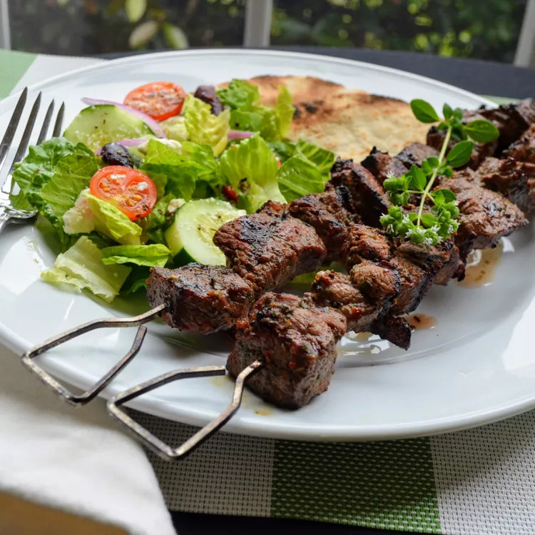

Lamb Souvlaki

Description
Lamb souvlaki with marinated pieces of lamb,
threaded on skewers, and char-grilled to perfection.
I like to serve these with rosemary garlic roasted
potatoes, a Greek salad, and pita bread.
Ingredients
- 1/3 cup olive oil
- 1 1/2 tablespoons freshly squeezed lemon juice
- 1 1/2 tablespoons red wine vinegar
- 1 1/2 tablespoons choppen fresh oregano
- 2 cloves garlic, minced
- 1/2 teaspoon salt
- 1/4 teaspoon ground black pepper
- 1 1/2 pounds boneless leg of lamb, trimmed of all fat
and cut into 1-inch cubes
Instructions
-
Whisk olive oil, lemon juice, red wine vinegar, oregano, garlic, salt, and pepper
together in a medium bowl.
Add cubed lamb and stir until lamb is coated with marinade.
Cover and refrigerate 3 hours, or overnight.
-
Preheat an outdoor grill for medium-high heat and lightly oil the grate.
-
Thread marinated lamb onto skewers, reserving any remaining marinade. Grill skewers until
desired doneness,
10 to 12 minutes, basting with the reserved marinade and turning occasionally
for even cooking.